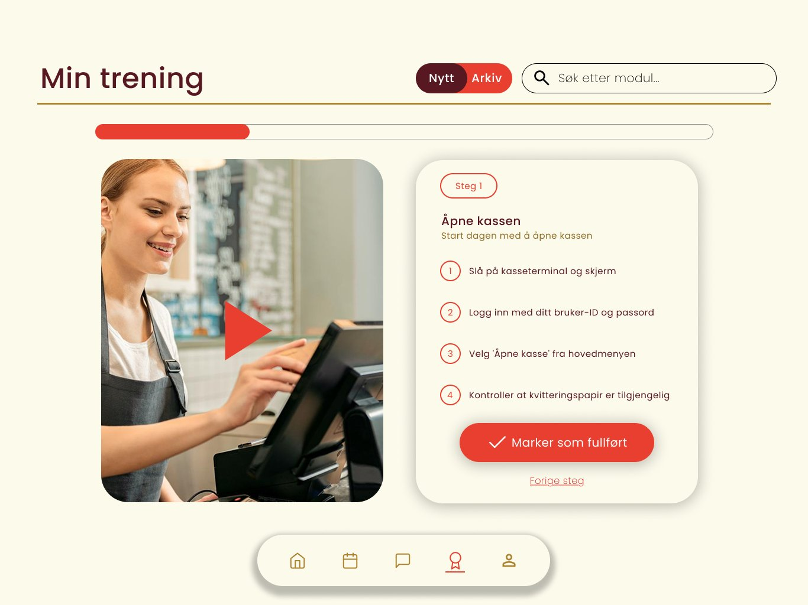
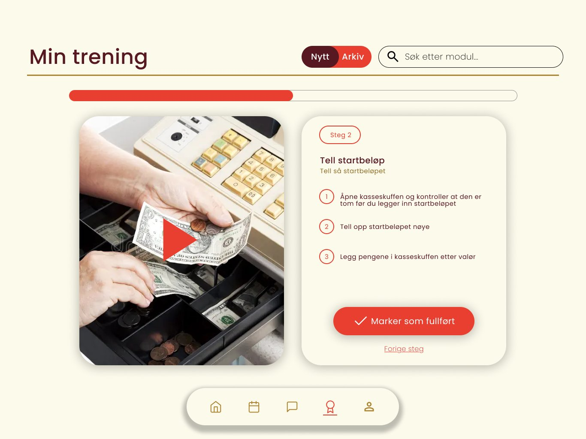
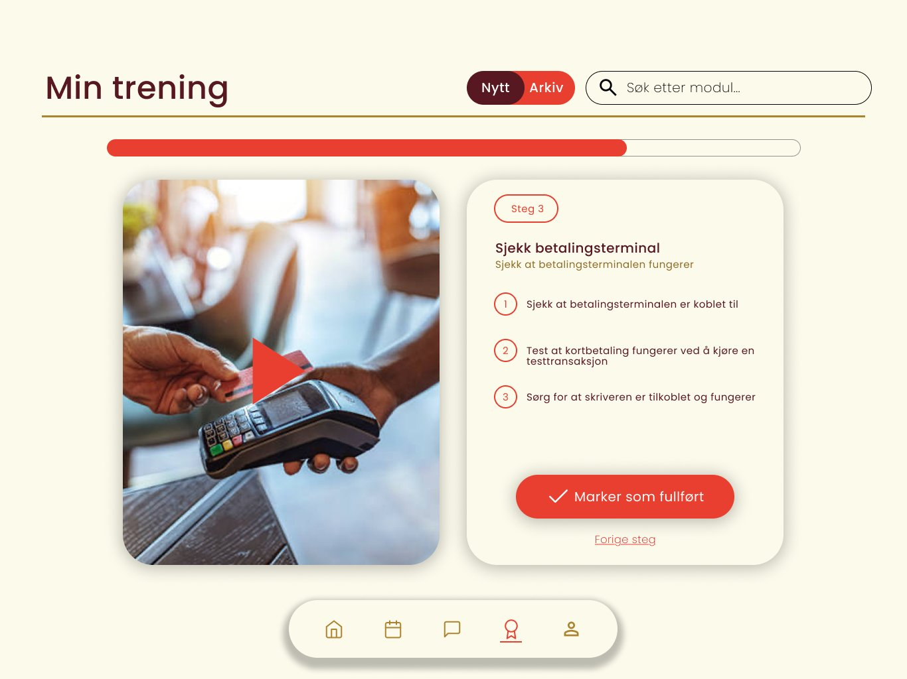
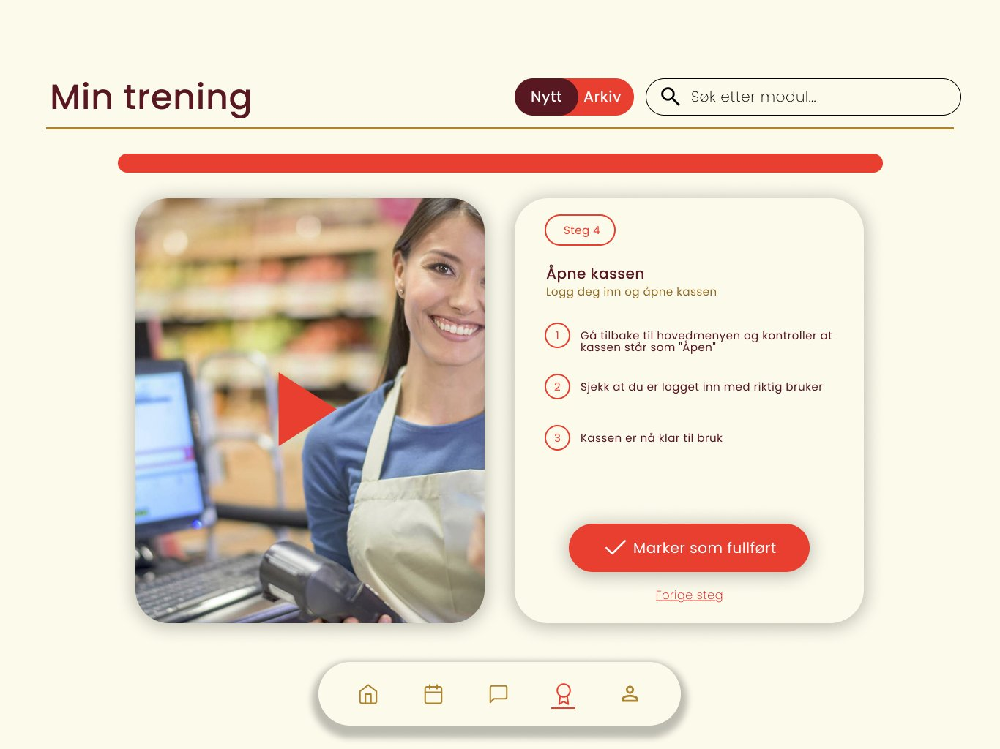
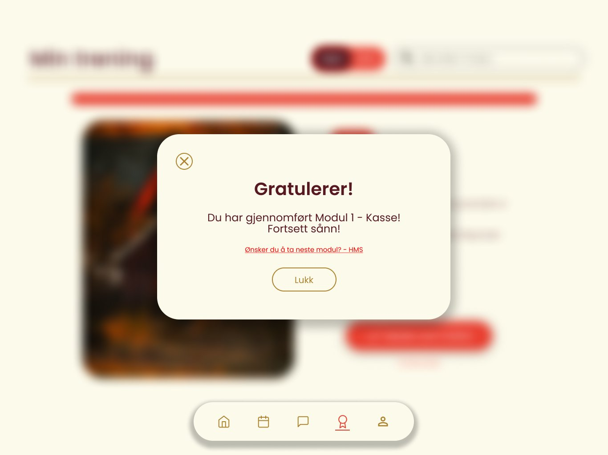
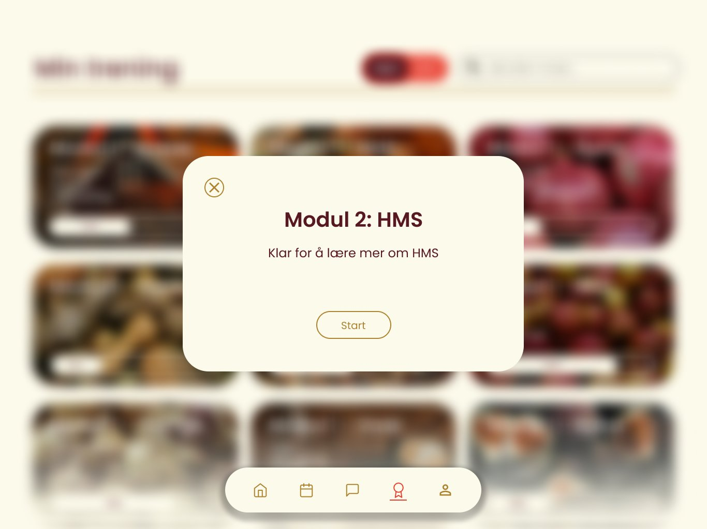
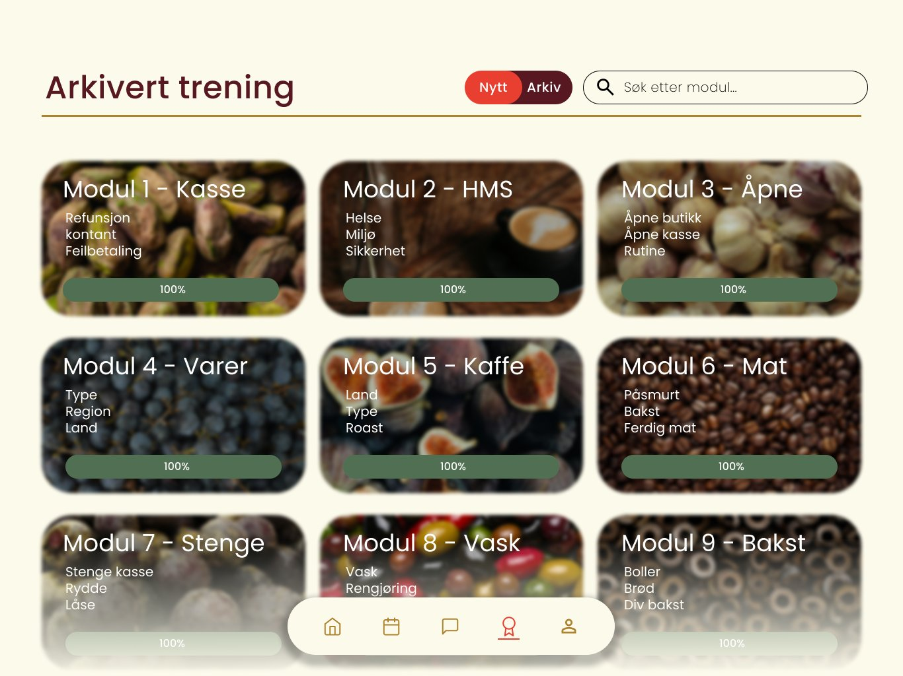
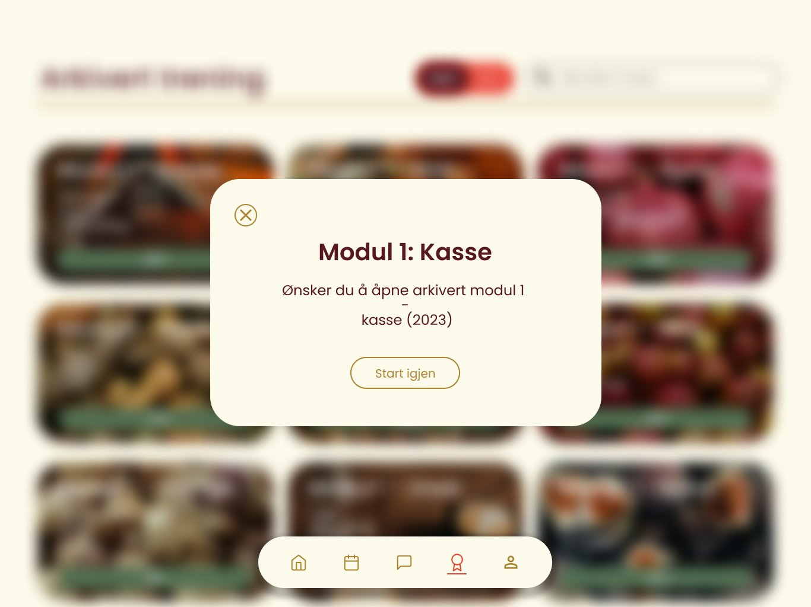

Prototype – Mobil
Vaktliste & kalender
Mobil-prototypen er bygget rundt scenariet til Kari – ansatt som ønsker å sjekke vaktplanen sin utenfor arbeidstid.
Åpne prototype →

IDG3009 Informasjonsarkitektur · Høst 2025
En samlet digital ansattportal for kommunikasjon, vaktlister og opplæring – utviklet for å forenkle hverdagen til ansatte i Gjøvik.
Innsikt & Utfordringer
Gjennom et semi-strukturert intervju med daglig leder Mari-Mette avdekket vi at driften var fordelt over Messenger, Apple Notater, separate kassesystemer og muntlig opplæring – uten noen felles struktur.
Håndtert i eget system uten kobling til kommunikasjon eller mål.
Viktig info forsvant i Messenger-tråder og Apple Notater.
Kun fysisk og muntlig – tidkrevende og ikke tilgjengelig utenom arbeidstid.
Ingen versjonskontroll. Nye ansatte fant ikke frem til riktig informasjon.
Designprosess
Semi-strukturert kvalitativt intervju med daglig leder. Ga dyp forståelse av drift og utfordringer.
Observasjoner gruppert i 6 temaer: salgsmål, vaktplan, kommunikasjon, opplæring, dokumenter og markedsføring.
5 personas utviklet. Fokus på Kari (erfaren ansatt) og Eirik (nyansatt) som primære brukere.
Lo-fi skisser i Figma, iterert til hi-fi prototyper med designmanual og WCAG-krav.
Designmanual
Designsystemet reflekterer varme, kvalitet og delikatesse – direkte inspirert av de to virksomhetenes eksisterende logoer og estetikk.
Fargepalett
Typografi
Vennlig og profesjonell. Effektiv til å skape tydelig hierarki. De runde formene gjør skriften lett å lese i alle størrelser.
Logo – ansettelsesbasert farge
Løsningen
Portalens fem kjerneområder samler det som tidligere lå spredt på ulike plattformer – tilgjengelig på mobil og iPad.
Månedlig kalender med full oversikt over tid, sted og hvem du jobber med. Tilgjengelig utenfor arbeidstid.
Felles meldingskanal med historikk. Viktig info drukner ikke lenger i Messenger-tråder.
Modulbaserte kurs med steg-for-steg instruksjoner og video. Kan fullføres hjemmefra i eget tempo.
Samlet bibliotek med versjonskontroll. Alltid oppdatert – alltid lett å finne.
Daglige mål, ukentlige oppdateringer og viktige beskjeder samlet på én startside.
Personlig profil, innstillinger og notifikasjonslogg. Tilpasset etter arbeidssted.
Prototype – Mobil
Mobil-prototypen er bygget rundt scenariet til Kari – ansatt som ønsker å sjekke vaktplanen sin utenfor arbeidstid.
Åpne prototype →
Prototype – iPad / Desktop
iPad-prototypen dekker Eiriks scenario – nyansatt som trenger strukturert, tilgjengelig opplæring i eget tempo, med modulbaserte kurs og tydelig progresjon.
Åpne prototype →







Gruppe 01
Intervjuguide · Personas · Design
Sitemap · Prototyper · Wireframes
Designmanual · Personas · Rapport
Prototyper · Wireframes · Intervju